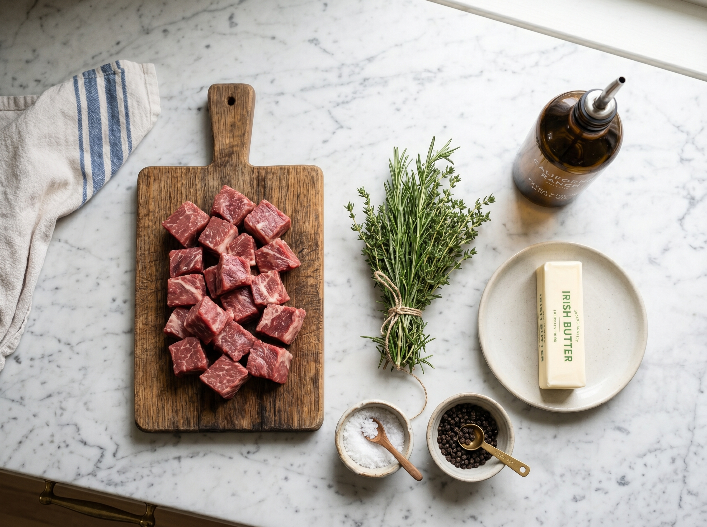
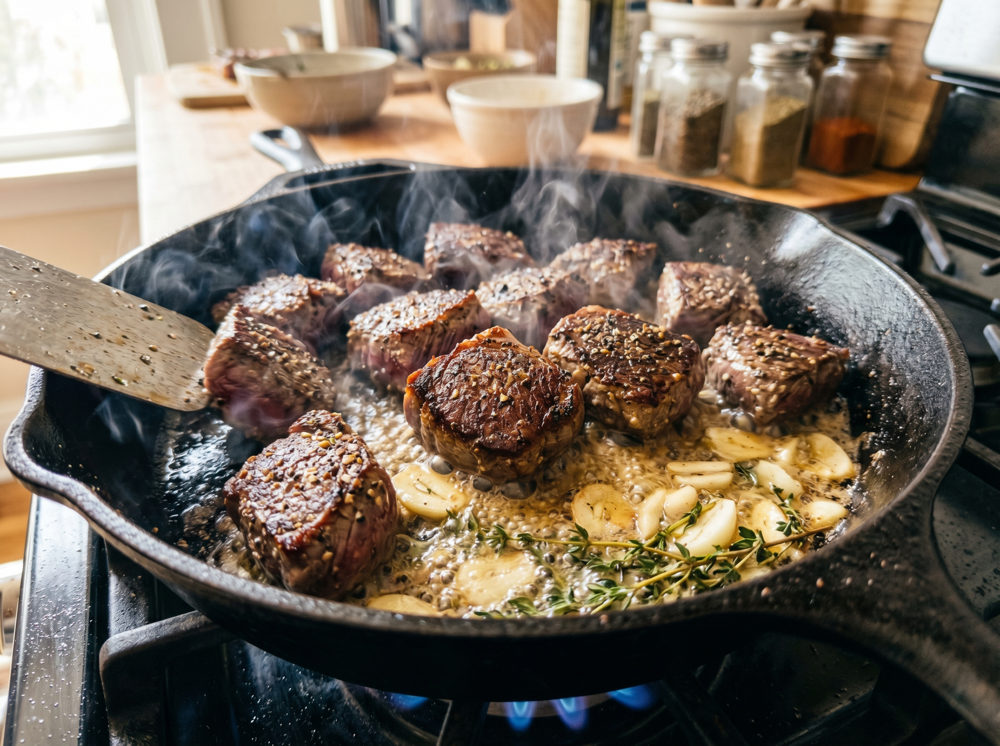
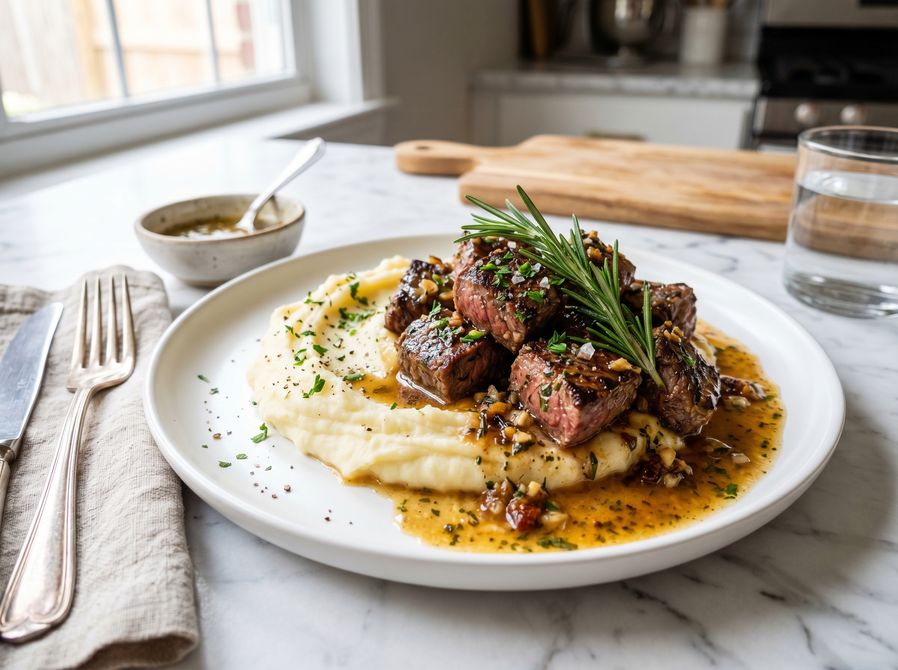

These garlic butter steak bites are proof that the most impressive dinners are often the simplest ones. Tender sirloin cubes, seared at high heat until caramelized and crusty on the outside, then finished in a cloud of foaming garlic herb butter — all in 15 minutes flat. This tastes like a steakhouse, costs a fraction of the price, and you'll be licking the pan.
The secret is a two-stage technique: sear the steak over blazing high heat first to get that deep, brown crust, then add the butter and aromatics at the end. This way the garlic doesn't burn, the herbs stay bright, and the butter coats every piece of steak in a glossy, fragrant sauce. It's a technique used in professional kitchens — and it works perfectly at home in under 15 minutes.
Why You'll Love This Recipe
- 15 minutes from fridge to table — the fastest impressive dinner on this site
- Steakhouse flavor at home — high-heat sear + butter basting is the professional technique
- Crowd-pleaser — works as a weeknight dinner or impressive dinner party dish
- Low-carb and protein-packed — 42g protein per serving
- No marinating needed — great quality beef doesn't need it
Best Cut of Beef for Steak Bites
Not all beef is equal for this recipe. Here's your guide to choosing at US grocery stores:
- Sirloin (top sirloin) — the best balance of tenderness, flavor, and price. Our top recommendation. Available at every grocery store.
- Ribeye — the most flavorful, most marbled, most expensive. Absolute luxury. Worth it for special occasions.
- New York strip — similar to sirloin, great texture, slightly less tender than ribeye.
- Tenderloin (filet mignon cubes) — the most tender cut, very mild flavor, highest price. Best for a special date night.
- Avoid chuck or round steak for this recipe — they need long cooking to become tender and won't work with the quick-sear method.
Find good quality beef at Whole Foods, Costco, Trader Joe's, or ask the butcher at your local grocery store for a fresh-cut sirloin. Costco has excellent sirloin at the best price per pound.
Kitchen Tools
- Cast iron skillet (12-inch) — this is the ideal pan for high-heat searing. If you don't have one, a heavy stainless steel skillet works.
- Tongs — essential for turning the steak bites quickly
- Instant-read thermometer (optional but helpful)
- Sharp chef's knife for cutting the steak
Garlic Butter Steak Bites
Juicy, caramelized sirloin cubes finished in garlic herb butter. 15 minutes. No fuss. Pure steak perfection.
Ingredients

Instructions
- 1
Prep the steak. Cut sirloin into 1-inch cubes. Pat every piece completely dry with paper towels — this is the single most important step for getting a good sear. Season very generously with kosher salt and black pepper on all sides. Don't be shy with the seasoning.
- 2
Superheat the pan. Heat a cast iron or heavy skillet over HIGH heat for 2–3 minutes until it's very hot — a drop of water should evaporate instantly. Add the oil. It will shimmer and smoke slightly. This high heat is what creates the dark, caramelized crust.
- 3
Sear in batches. Working in two batches (don't crowd the pan — this causes steaming instead of searing), add the steak cubes in a single layer. Sear undisturbed for 60–90 seconds, then turn each piece and sear the other sides for 30–60 seconds. For medium-rare, internal temperature should be 130–135°F / 54–57°C. Remove first batch to a plate, repeat with second batch.
- 4
Make the garlic herb butter. Reduce heat to medium. Add all the steak bites back to the pan. Add butter, garlic, thyme, and rosemary. As the butter melts and foams, use a spoon to continuously baste the steak bites with the garlic-herb butter for 30–45 seconds.
- 5
Finish and serve. Add Worcestershire sauce and toss everything together quickly. Remove from heat immediately. Transfer to a serving plate, pour any remaining butter from the pan over the top, and garnish with chopped parsley. Serve with lemon wedges on the side — a squeeze of lemon over the steak at the table is outstanding.

The Keys to Perfect Steak Bites
- Dry is everything. Any moisture on the beef surface creates steam, which prevents the crust. Pat with paper towels right before cooking.
- Cook in batches. Crowding the pan drops the temperature and the beef steams instead of sears. Two batches = much better results.
- Don't well-done them. Steak bites are at their best at medium-rare (130°F / 54°C) or medium (140°F / 60°C). Cooking past medium makes them chewy and less flavorful.
- Rest even briefly. Let the steak bites rest on the plate for 2 minutes before eating so the juices redistribute.
- Add butter last. Butter burns at high heat. Always sear first with oil, then add butter at medium heat to baste.
Variations
- Mushroom version: Add 8 oz (225g) sliced cremini mushrooms after the first batch of steak and sauté for 3 minutes before making the butter sauce.
- Cajun style: Season steak bites with Cajun seasoning instead of just salt and pepper for a spicy Southern flavor.
- Asian-inspired: Replace the rosemary/thyme with ginger, add a teaspoon of sesame oil, and finish with a drizzle of soy sauce instead of Worcestershire.
- Herb compound butter: Make a compound butter by mixing softened butter with garlic, herbs, and lemon zest — serve a pat on top of the hot steak bites at the table.
Serving Suggestions

- Garlic mashed potatoes — the classic steakhouse combination
- Over egg noodles or pasta with the butter sauce drizzled over
- With roasted asparagus and a simple green salad
- Over cauliflower mash for a low-carb dinner
- As a appetizer on toothpicks for dinner parties — they disappear in minutes
- Served in a warm bowl with steamed white rice
Storage & Reheating
Refrigerator
Store in an airtight container for up to 3 days.
Freezer
Freeze cooked steak bites up to 2 months. Thaw overnight in the fridge before reheating.
Reheat
Warm briefly in a hot skillet with a small knob of butter for 1–2 minutes. Don't microwave — it overcooks beef quickly.
Frequently Asked Questions
What's the best way to cut steak for steak bites?
Cut the steak into 1-inch cubes — this size gives you a good crust-to-interior ratio. Cut against the grain of the meat (perpendicular to the muscle fibers) for maximum tenderness. You'll see the grain lines running in one direction — cut across them, not parallel to them.
Can I use pre-cut stew beef for this recipe?
Only if the package specifically says "sirloin stew beef" or "top sirloin." Generic stew beef is usually cut from tougher chuck or round, which needs long braising to become tender. It won't work well with this quick-sear method. Spend the extra bit and buy a sirloin steak to cut yourself.
My steak bites are chewy — what went wrong?
Three likely causes: (1) You used a tough cut like chuck instead of sirloin. (2) You overcooked them — steak bites become chewy past medium (140°F / 60°C). (3) You didn't cut against the grain — even a great cut becomes chewy if cut parallel to the muscle fibers.
Where can I find Worcestershire sauce in US stores?
Worcestershire sauce is in the condiment aisle of every US grocery store — Walmart, Kroger, Publix, Whole Foods. Lea & Perrins is the most widely available brand. It's a dark, tangy sauce (originally from England) that adds savory depth to beef dishes without any strong flavor of its own.
Nutrition Information
Per serving. Values are estimates.
| Nutrient | Amount per Serving |
|---|---|
| Calories | 380 kcal |
| Total Fat | 22g |
| Saturated Fat | 10g |
| Protein | 42g |
| Carbohydrates | 2g |
| Sodium | 420mg |
You Might Also Love


Made These Steak Bites?
How did you serve them? Leave a comment below — and if you're on Pinterest, save this recipe for your next special dinner at home.
📌 Save on Pinterest